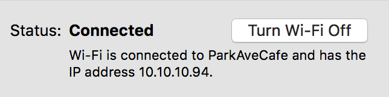

Better Analytics With APIs Part 1: How the internet works
#sdx-wtf-internet-apis
Welcome! My name is
Lyzi, I work on APIs, and I like teaching.
Goal of this workshop: You feel sparkley.

Credit where credit is due.This information comes from a series of amazing blog posts, presentations, and books. Full links on the last slide.
We're going to start with a scenario:
Hassan checks his Facebook.I don't know anyone named Hassan, but this is a good example for talking through the process of what happens when you use the internet.
Three main pieces to discuss:
- Request
- Response
- Parsing the response
Hassan's computer requests a web site, the server sends back a response, and then Hassan's browser needs to parse the response and do something with it.
Part I: Requests
1. Hassan types facebook.com into the browser and presses Enter.
From Hassan's perspective, what's the next thing that happens?the page loads. but really, what's going on behind the scenes?
1a. The browser adds a few things to the URL:
https://facebook.com/
https://facebook.com/
https://
— protocolfacebook.com
— domain/
— resource
You can go really deep here.each of these steps can be broken down into many many sub-steps
1b. The browser looks up the domain in DNS — Domain Name System
PSA: Computers are dumb.

Computers need rules to communicate with each other. In internet land, these are protocols.hint: if an acronym has a "p" in it, it probably stands for protocol.
DNS takes the human-readable URL and converts it to an IP (Internet Protocol) address.
Every machine connected to the web has an IP address, including yours!

Importantly: so does facebook.com. DNS tells the browser what IP address is associated with that URL.
1c. The browser + your computer generate an HTTP request. (What does HTTP stand for?)
A
request contains a few different pieces:
- method
- resource
- headers
- body (optional)
Main types of request
methods:
GET
— requesting to read a resource from the serverPOST
— requesting to post a resource to the serverPATCH
— requesting to update or edit a resource on the serverDELETE
— requesting to delete a resource on the server
Back to Hassan. What type of request did his browser make?
The
resource is what we're requesting. In this case, we are requesting
/
, which is the same as
index.html
-- the main page.
The server needs the name of the resource to route the request to the right spot (more on this in a sec).
The
headers give the server additional information to fulfill the request. Common headers include:
Accept
— the types of responses the browser will accept in response to the requestReferer
— the referring site (if referred)User-Agent
— the type of application that made the request
There are a ton of HTTP headers.
The
request body is not used in a
GET
request, but is used when posting or updating resources on a server.
1d. Once the request is completed, it gets sent by Hassan's computer to the correct server (as identified by IP address with the help of DNS).
in this moment, Hassan's computer becomes a client
Part II: Responses
You may have noticed we're still on step 1.Hassan isn't seeing any of this happening, so to him, this is all part of typing in the URL and pressing enter. That's why we're on step 1.
1e. The server receives the request and breaks it down to get the info it needs:
- request method
- domain
- requested path/page/resource
1f. The server verfies a bunch of info: does a host for the requested domain exist on that server? If so, can it accept the request type? Is the client (Hassan's computer) allowed to make that kind of request?
In our case Hassan is requesting a public web page. Unless DNS did something really wrong, he should be good.
1g. Once verfied, the server may change info about the request for internal purposes. #serverstuff

1h. Server finds the requested resource!
1g. Server constructs a response to send back to Hassan's computer.
Like requests, responses also contain a few well-defined pieces.
Remember when I said computers are dumb?worth bringing up again -- everything computers do is well defined and specific.
A
response contains a few different pieces:
- status code
- headers
- body (optional)
Look familiar? ;)
Overview:
- 100 — server tells the client to continue and send the request body
- 200 — everything is good
- 300 — server has to or has redirected the request
- 400 — the client did something wrong
- 500 — the server did something wrong
The headers are similar to request headers -- they give info about the response and any instructions for the client.
Common headers include:
Cache-Control
— how long the client is allowed to cache the resourceContent-Type
— the type of content in the returned resourceLast-Modified
— the last time the resource was modified
There are a ton of HTTP headers.
The body contains the requested resource (payload). In Hassan's case, this resource is the HTML page that makes up facebook.com.
Part III: Parsing the response
Don't worry, we haven't forgotten Hassan.
1h. Once the browser receives the response, it reads the HTML page and starts rendering it.
Sooner than later, the HTML file will tell the browser to request an additional resource for the page, and all of this starts again.
2. Hassan enjoys his news feed!
You may be asking: "What about Hassan's specific content? His facebook.com and my facebook.com do not look the same."
Depending on the application, there are
two places where the specific content can be added:
(That's kind of out of scope of this workshop, though.)
Part IV: Overview and tools
The best tool for understanding requests and responses? Your browser.
switch over to console and inspect things
Review:
- browser finds the domain's IP address and constructs a request
- computer sends that request via the internet to that IP
- server receives that request and finds the requested resource
- server sends a response to the client along with the resource
- client parses and displays the resource
This is a super cursory overview, but you are a champion!